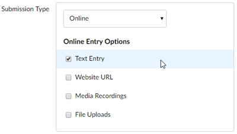

This page teaches instructors how to create a video assignment in canvas.
The following steps apply to assigning to individual students, not group work.
-
Go to the Course Navigation Menu > Assignments.
-
Click the Add Assignment button.
-
Type the name of the assignment in the Assignment Name text box.
-
Type the assignment instructions in the text box.
-
Scroll down to the Points text box and type the highest grade students
can receive.
-
Select the Assignment Group from the drop-down list, if necessary.
-
Go to the Submission Type drop-down list and select Online.
The box expands to reveal the options.
-
Choose Text Entry in the Online Entry Options.

-
Scroll down to the Assign to options. Using the date pickers:
-
Select the Due date.
-
Select the Available from and Until dates.
-
Click Save & Publish. The assignment displays.
Click Save if you are not ready to make the assignment visible to
students.